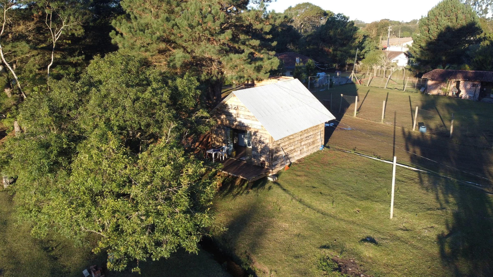

Atendimento próximo
Você conversa diretamente com quem planeja e realiza a captação.

Sobre a Hero Drone
Planejamento, sensibilidade visual e atendimento próximo para transformar espaços reais em conteúdo marcante.
Quem somos
A Hero Drone produz fotos e vídeos aéreos para hospedagens, imóveis, empresas e propriedades em Curitiba e Região Metropolitana.
Cada trabalho começa com uma conversa sobre o espaço, o público e o objetivo. A partir disso, planejamos os horários, os enquadramentos e os formatos que melhor apresentam o lugar.
O resultado é um material organizado, profissional e preparado para sites, plataformas de reserva, redes sociais, anúncios ou documentação visual.
Você conversa diretamente com quem planeja e realiza a captação.
Luz, clima, segurança e objetivo orientam cada voo.
O drone é a ferramenta; a história do lugar é o centro do trabalho.

Área de atendimento
Também atendemos cidades próximas mediante análise de deslocamento e viabilidade do voo.
Consultar meu local →